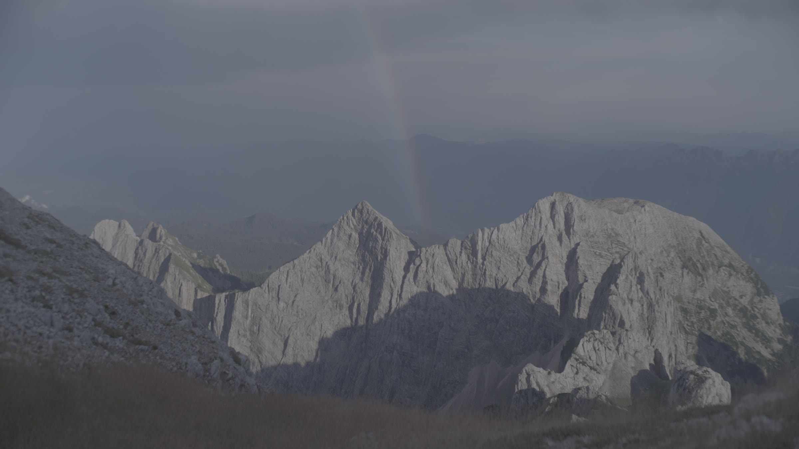
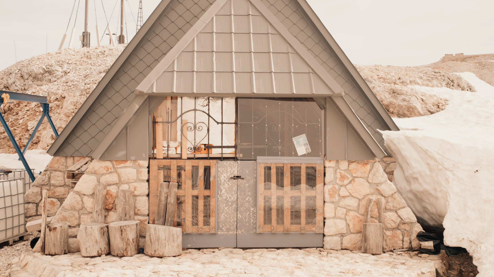
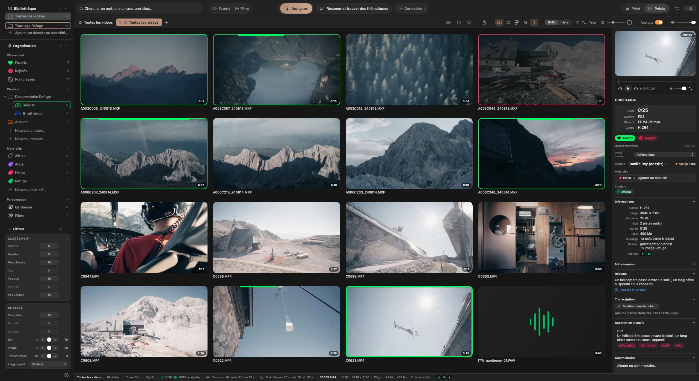
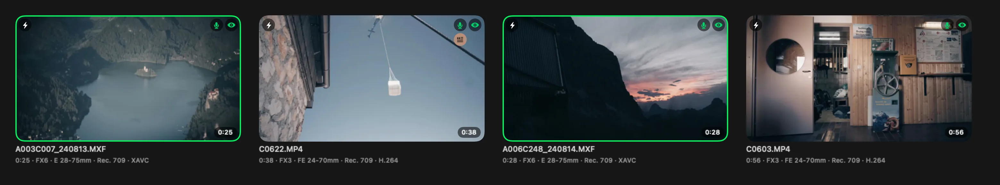
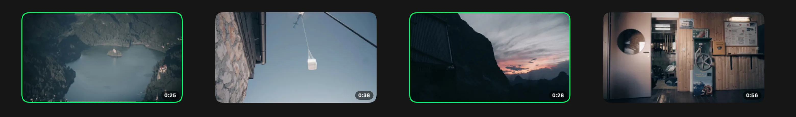
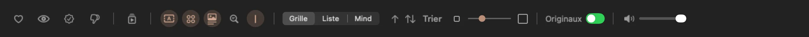
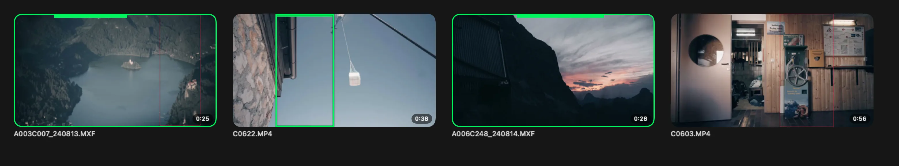
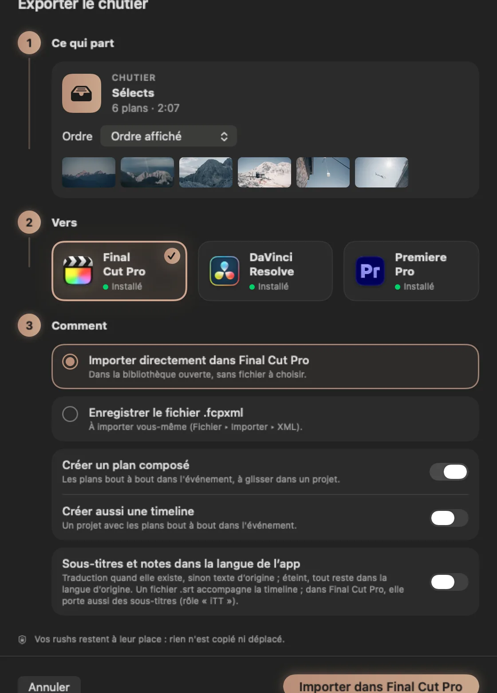

L’arc-en-ciel sur les crêtes ?
L’IA d’Eye Derush écoute et regarde vos rushs, puis retrouve chaque moment.
Trouvé à 0:03
Paroles et images, dans les mêmes résultats
Une recherche propulsée par l’IA, qui comprend le contexte de chaque plan. Chaque résultat s’ouvre à la seconde près.

- Par les mots
- Dans la transcription et ses traductions, sans souci d’accents ni de majuscules.
- Par le sens
- L’IA retrouve un passage qui dit la même chose avec d’autres mots.
- Plus comme ça
- Un clic droit sur un résultat ramène les passages les plus proches.
Cliquez une phrase, le plan s’ouvre là
La transcription suit la lecture, nomme qui parle, et se corrige ou se découpe en sections.

Un coup d’œil avec la barre d’espace
Depuis une vignette ou un résultat, le plan se lit dans un panneau, sous-titres compris. La fiche reste à un clic.

Transcrit dans plus de 100 langues
Un rush en slovène, en japonais ou en portugais devient un texte qui se cherche, puis une traduction en français ou en anglais.
- Qui parle
- Chaque voix a son nom dans la transcription.
- Sous-titres traduits
- Affichés sur le lecteur et envoyés au montage avec les plans.
- Traductions cherchables
- Un mot français retrouve la phrase slovène qui le dit.
Vos images log, déjà étalonnées
Deux LUT l’une sur l’autre, appliquées à l’écran seulement : vos fichiers ne sont jamais modifiés.


S-Log3 brut LUT Caméra + Look- LUT Caméra
- Ramène le log en Rec. 709. En Auto, elle choisit la conversion de chaque caméra : S-Log3, C-Log, V-Log, HLG…
- LUT Look
- Un style par-dessus, avec son intensité réglable.
- Exposition et température
- Réglées à la main avant la LUT, en diaphragmes et en kelvins.
Auto rattrape les extrêmes
Un plan beaucoup trop clair ou trop sombre est ramené à mi-chemin, dans les vignettes et le lecteur. Les autres restent tels quels.

 Sans Auto
Avec Auto
Sans Auto
Avec Auto
Dérushez dans le train, en avion ou sur le canapé
Le catalogue emporte une copie légère de chaque plan. Laissez les disques au bureau.

- Sans les disques
- Lecture, survol, sections et classement se font sur les aperçus.
- Sans connexion
- La recherche par les mots, les chutiers et les mots-clés restent sur votre Mac.
- Léger à emporter
- Environ 0,5 Go par heure de rushs en 540p, 0,9 Go en 720p.
Vos fichiers ne sont jamais modifiés, déplacés ni copiés.

- Favoris et rejetés
- Une touche classe un plan, ou seulement un passage.
- Sections
- Un passage gardé part au montage, pas le plan entier.
- Chutiers et mots-clés
- Un plan peut se ranger dans plusieurs à la fois.
- Personnages
- Les visages sont reconnus sur votre Mac, jamais envoyés.
Affichez ce qui vous sert, masquez le reste
Chaque information d’une vignette s’allume ou s’éteint d’un clic : nom, pastilles d’analyse, détails de tournage.




- Colonnes de la liste
- Clic droit sur les en-têtes pour choisir les colonnes, clic pour trier.
- Barre d’outils et barre latérale
- Rangez les boutons, épinglez les blocs, ordonnez les filtres.
- Sous-titres
- Trois tailles, trois polices, blanc ou jaune.
- Raccourcis
- Chaque touche se change dans les Réglages.
Toujours savoir d’où vient un plan
Choisissez un plan : son dossier et ses chutiers s’éclairent dans la barre latérale, et la colonne de droite donne son chemin sur le disque.
- Son dossier
- Encadré dans la barre latérale, d’où que vous regardiez.
- Ses chutiers et mots-clés
- Listés sous le lecteur, à un clic.
- Son tournage
- Caméra, objectif, date, cadreur et chemin complet du fichier.
Gardez un passage, pas tout le plan
Glissez sur une vignette pour tracer une section, puis classez-la d’une touche : vert pour garder, rouge pour écarter.


Un résumé, puis les sujets qui reviennent
Sur une sélection de plans, l’IA écrit ce qu’ils montrent et disent, puis repère les thématiques. Chacune devient un chutier d’un clic.


Puis tout part au montage
Un moment, une section ou un chutier entier : le logiciel lit vos rushs là où ils sont.
- Final Cut Pro Import direct dans la bibliothèque ouverte, ou fichier .fcpxml.
- DaVinci Resolve Un chutier dans le Media Pool du projet ouvert.
- Premiere Pro Un fichier .xml : chutiers, plans, et sections en sous-plans.

L’IA n’analyse que ce qui compte
Avant tout envoi, votre Mac repère chaque changement de plan et chaque parole. Moins d’images, moins de son : moins d’attente, moins d’heures comptées.
- images décrites, sur 2,4 millions
- 13 449
- de silence, de musique et d’ambiance jamais envoyées
- 6 h
- plans sans voix : rien à transcrire
- 116
Mesuré sur notre propre catalogue : 2 173 plans, 27 heures de rushs en montagne.
- Une image nette par plan
- Plus une quand le plan bouge, et une par minute sur un plan fixe.
- La parole seulement
- Les pistes muettes sont écartées, les autres mixées en une seule.
- Jamais deux fois
- Un plan déjà analysé ne repart pas, sauf si vous le demandez.
Payez l’analyse à l’heure
Deux formules, au choix. Tout le reste de l’app est gratuit et reste sur votre Mac.
Crédits
10 h
d’analyse ou plus, utilisées quand vous voulez.
Abonnement
1 h / mois
d’analyse ou plus, chaque mois.
Prix annoncés à la sortie.
Gratuit, sur votre Mac
- Importer et pré-analyser
- Reconnaître les visages
- Classer et ranger
- Exporter vers le montage
Compté en heures d’analyse
- Transcription par l’IA
- Description des images par l’IA
- Recherche par le sens, par l’IA
- Thématiques trouvées par l’IA
Avant chaque analyse, l’app montre ce qu’elle va compter.
Vos formats, vos profils log
- Vidéo
- MOV, MP4, M4V, MXF, MKV, AVI, MTS, M2TS
- Son seul
- WAV, MP3, M4A, AIFF, FLAC, CAF
- Profils log, affichés en Rec. 709
- Sony S-Log2, S-Log3. Canon C-Log, C-Log2, C-Log3. Panasonic V-Log. Fujifilm F-Log, F-Log2. DJI D-Log. ARRI LogC3, LogC4. RED Log3G10. Apple Log. HLG.
- Mac
- macOS 26 ou plus récent
- Langues
- Interface en français et en anglais